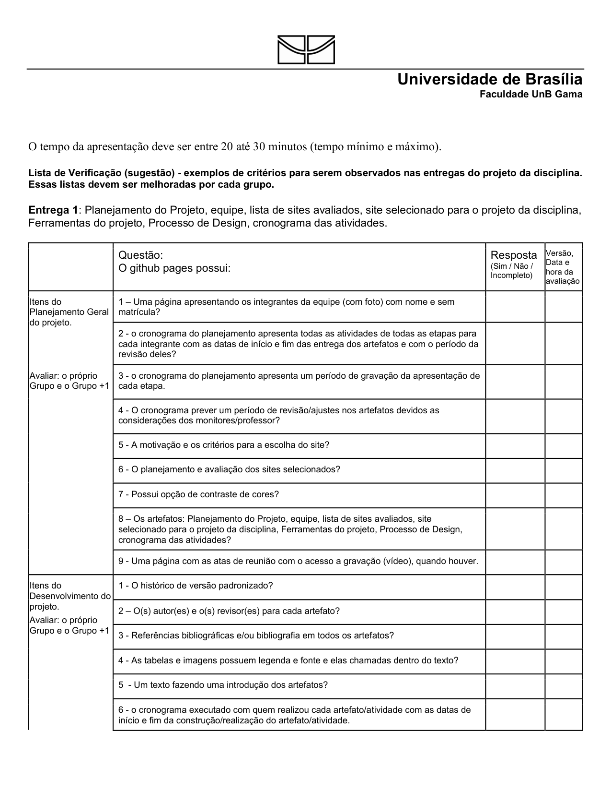
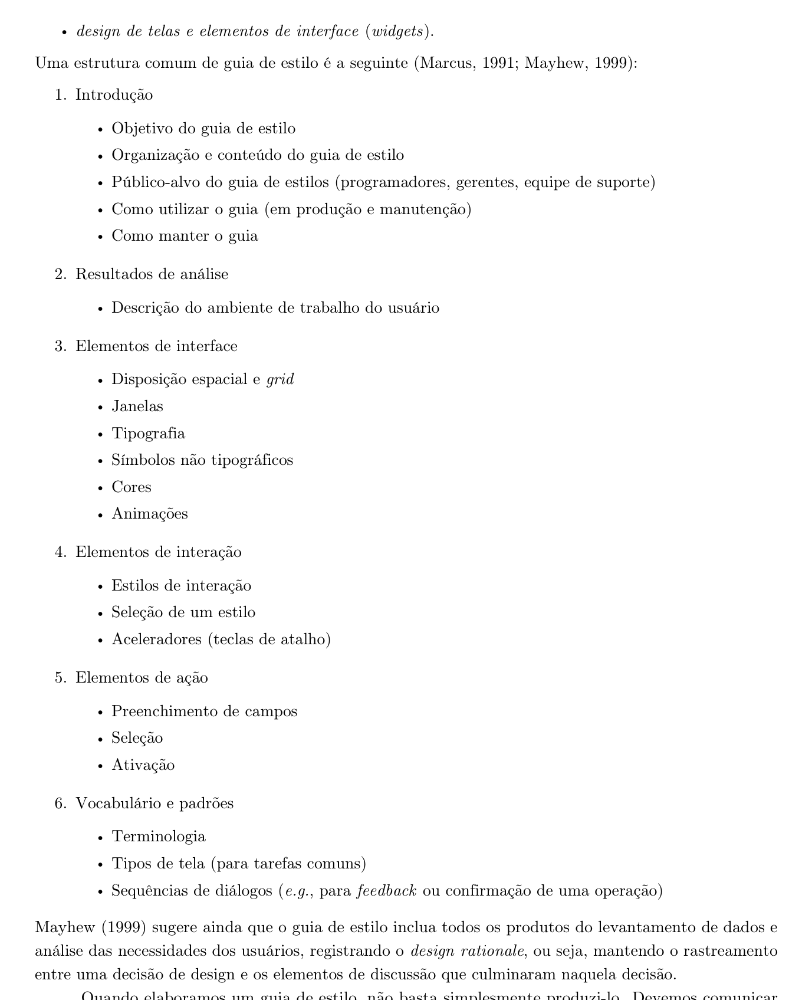
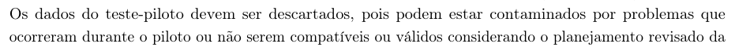
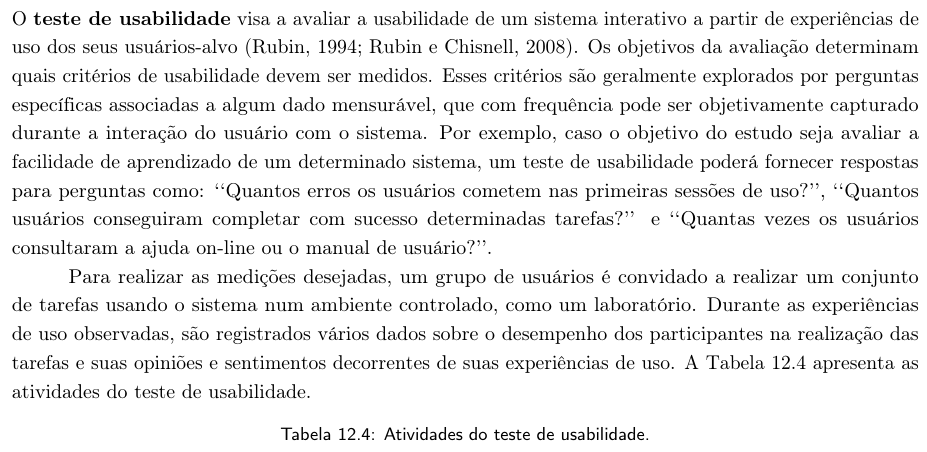
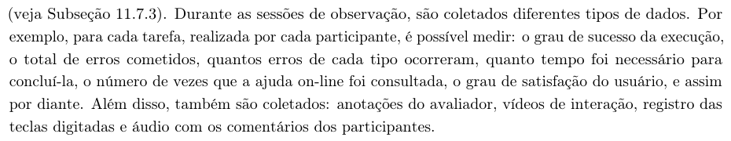
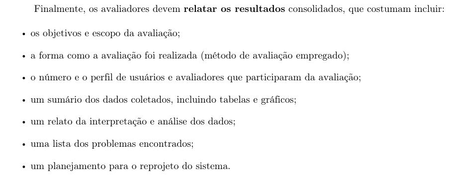
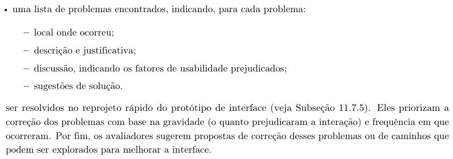
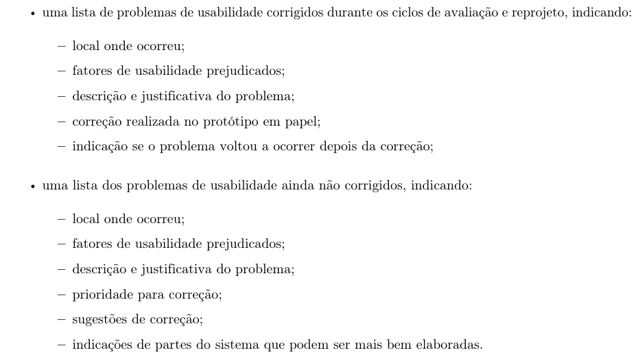

Lista de Verificação — Protótipo de Alta Fidelidade e Teste de Usabilidade (Nível 3)
Tabela de Contribuição e Transparência de IA Generativa
A Tabela 1 apresenta a distribuição de responsabilidades na elaboração, curadoria e revisão de Protótipo de Alta Fidelidade e Teste de Usabilidade (Nível 3).
Tabela 1 — Matriz de Contribuição e Transparência de IA Generativa — Protótipo de Alta Fidelidade e Teste de Usabilidade (Nível 3)
| Integrante | Atribuição no Artefato | Data | Horário | Ferramenta de IA | Propósito do Uso de IA |
|---|---|---|---|---|---|
| Vinicius Silva Araruna | Consolidação dos critérios de Alta Fidelidade (AF-01 a AF-12, extraídos de lista-verificacao.md) e rastreabilidade Plano de Ensino / Mayhew Nível 3 |
20/11/2026 | 14:00 - 15:30 | Google Gemini | Suporte na organização estrutural, formatação de tabelas em Markdown e conferência cruzada com o Plano de Ensino |
| Gustavo Antonio Rodrigues e Silva | Revisão de conformidade estrutural, navegação e checagem de links | 20/11/2026 | 15:30 - 16:00 | — | Revisão por pares e validação editorial |
| Edvaldo Soares Brasileiro Filho | Auditoria de rastreabilidade frente ao Plano de Ensino (DG-01 a DG-11) e referências ABNT |
20/11/2026 | 15:30 - 16:00 | — | Revisão por pares e conferência documental |
Fonte: Elaborada pelos autores, 2026.
1. Introdução e Contextualização Metodológica
Este módulo normativo rege a verificação do Nível 3 do Ciclo de Vida de Deborah Mayhew (1999) — Protótipo de Alta Fidelidade e Teste de Usabilidade (Entregas 6 e 7). Para evitar repetição dos recortes já publicados no Framework Transversal, os critérios de planejamento DECIDE (04-planejamento-decide.md), métodos empíricos (07-metodos-avaliacao.md) e estrutura de relato (06-resultado-avaliacao.md) complementam diretamente os critérios específicos de Nível 3 abaixo.
Pré-requisito Transversal de Governança (Prof. Dr. André Barros de Sales)
Todo artefato de Nível 3 também é auditado pelos 11 Itens de Desenvolvimento Geral (DG-01 a DG-11) em 00. Governança e Plano de Ensino Geral.
2. Instrumento Normativo de Verificação — Protótipo de Alta Fidelidade e Teste de Usabilidade (Nível 3)
2.1 Critérios do Plano de Ensino Aplicáveis às Entregas 6 e 7 (Prof. Dr. André Barros de Sales)
A Tabela 2 registra os requisitos institucionais do Plano de Ensino incidentes sobre o Nível 3.
Tabela 2 — Critérios do Plano de Ensino para Prototipação de Alta Fidelidade
| ID | Critério / Pergunta de Verificação | Autor do Item | Fundamentação Normativa | Evidência Visual (Figura) | Resposta | Versão, Data e Hora da Avaliação |
|---|---|---|---|---|---|---|
| PE-E6-E7-01 | As entregas de Prototipação de Alta Fidelidade e Relato dos Resultados contemplam integralmente os 11 itens transversais de desenvolvimento (DG-01 a DG-11), incluindo autoria individualizada em artefato e vídeo Não Listado (20–30 min)? |
Prof. Dr. André Barros de Sales (Plano de Ensino FGA0173, 2026) | Plano de Ensino (Sales, 2026, pp. 5–6, 8–9) | Ver Figura 1 | [ ] Sim (Conforme)[ ] Não (Não Conforme)[ ] Incompleto[ ] N/A |
(Preencher na inspeção) |
| PE-E6-E7-02 | Os métodos, planejamento DECIDE, teste-piloto isolado e relato de resultados atendem às exigências da disciplina conforme aplicabilidade transversal no Nível 3? | Prof. Dr. André Barros de Sales (Plano de Ensino FGA0173, 2026) | Plano de Ensino (Sales, 2026, pp. 5, 12–13) | Ver Figura 2 | [ ] Sim (Conforme)[ ] Não (Não Conforme)[ ] Incompleto[ ] N/A |
(Preencher na inspeção) |
Fonte: Plano de Ensino da Disciplina (Prof. Dr. André Barros de Sales, 2026).
2.2 Critérios Normativos de Alta Fidelidade e Teste de Usabilidade (AF-01 a AF-12)
A Tabela 3 consolida os 12 critérios originalmente publicados em lista-verificacao.md (Seção 10) com vínculo às evidências visuais de Teste de Usabilidade, Teste-Piloto e Relato.
Tabela 3 — Lista de verificação normativa de Protótipo de Alta Fidelidade (12 itens)
| ID | Critério / Pergunta de Verificação | Autor do Item | Fundamentação Canônica | Evidência Visual (Figura) | Resposta | Versão, Data e Hora da Avaliação |
|---|---|---|---|---|---|---|
| AF-01 | O protótipo de alta fidelidade foi construído (Figma/Web) em conformidade com o Guia de Estilo e Personas e possui links e telas acessíveis? | Vinicius Silva Araruna | MAYHEW (1999, Cap. 9–11); BARBOSA et al. (2021, Cap. 10, pp. 235–240) | Ver Figura 3 | [ ] Sim (Conforme)[ ] Não (Não Conforme)[ ] Incompleto[ ] N/A |
(Preencher na inspeção) |
| AF-02 | Há rastreabilidade explícita demonstrando como os problemas e oportunidades do Protótipo de Papel (Nível 2) foram resolvidos no Nível 3? | Vinicius Silva Araruna | MAYHEW (1999, Cap. 11–13); SNYDER (2003, Cap. 10) | Ver Figura 4 | [ ] Sim (Conforme)[ ] Não (Não Conforme)[ ] Incompleto[ ] N/A |
(Preencher na inspeção) |
| AF-03 | Foi executado e gravado o Teste-Piloto de Alta Fidelidade antes das sessões empíricas com usuários reais? | Vinicius Silva Araruna | BARBOSA et al. (2021, Cap. 11, Seção 11.7.2, p. 260) | Ver Figura 5 | [ ] Sim (Conforme)[ ] Não (Não Conforme)[ ] Incompleto[ ] N/A |
(Preencher na inspeção) |
| AF-04 | Consta declaração explícita de que os dados do Teste-Piloto foram rigorosamente isolados e não computados nos resultados finais? | Vinicius Silva Araruna | BARBOSA et al. (2021, p. 260); SALES (2026, Plano de Ensino, p. 13) | Ver Figura 5 | [ ] Sim (Conforme)[ ] Não (Não Conforme)[ ] Incompleto[ ] N/A |
(Preencher na inspeção) |
| AF-05 | A escolha do método (Teste de Usabilidade / Think-Aloud) e o tamanho da amostra (n participantes) estão justificados na literatura? | Vinicius Silva Araruna | RUBIN; CHISNELL (2008); KRUG (2014); NIELSEN (1993, p. 26) | Ver Figura 6 | [ ] Sim (Conforme)[ ] Não (Não Conforme)[ ] Incompleto[ ] N/A |
(Preencher na inspeção) |
| AF-06 | O Termo de Consentimento Livre e Esclarecido (TCLE) foi gravado ou assinado nos primeiros 60 segundos, garantindo anonimização LGPD? | Vinicius Silva Araruna | BRASIL (Resolução CNS nº 510/2016 e Lei nº 13.709/2018); BARBOSA et al. (2021, p. 128) | Ver Figura 7 | [ ] Sim (Conforme)[ ] Não (Não Conforme)[ ] Incompleto[ ] N/A |
(Preencher na inspeção) |
| AF-07 | As sessões empíricas com usuários reais aderentes ao perfil foram conduzidas e disponibilizadas em vídeo? | Vinicius Silva Araruna | KRUG (2014); RUBIN; CHISNELL (2008); BARBOSA et al. (2021, pp. 289–290) | Ver Figura 8 | [ ] Sim (Conforme)[ ] Não (Não Conforme)[ ] Incompleto[ ] N/A |
(Preencher na inspeção) |
| AF-08 | O relato apresenta estrutura completa (objetivos, método, tarefas, resultados, limitações) e página principal consolidada sem lacunas? | Vinicius Silva Araruna | BARBOSA et al. (2021, Cap. 11–12, pp. 263 e 290) | Ver Figura 9 | [ ] Sim (Conforme)[ ] Não (Não Conforme)[ ] Incompleto[ ] N/A |
(Preencher na inspeção) |
| AF-09 | Foram coletadas e analisadas métricas quantitativas de desempenho (conclusão, tempo de execução, erros/KLM) e satisfação (ex.: SUS)? | Vinicius Silva Araruna | RUBIN; CHISNELL (2008); BROOKE (1996, pp. 189–194) | Ver Figura 10 | [ ] Sim (Conforme)[ ] Não (Não Conforme)[ ] Incompleto[ ] N/A |
(Preencher na inspeção) |
| AF-10 | Os problemas de usabilidade detectados foram classificados na escala de severidade de Nielsen (0 a 4) com indicação das heurísticas violadas? | Vinicius Silva Araruna | NIELSEN (1994, p. 30); BARBOSA et al. (2021, pp. 290 e 305) | Ver Figura 11 | [ ] Sim (Conforme)[ ] Não (Não Conforme)[ ] Incompleto[ ] N/A |
(Preencher na inspeção) |
| AF-11 | Foram definidas diretrizes concretas de reprojeto e executada a Lista de Verificação da Técnica antes da entrega? | Vinicius Silva Araruna | MAYHEW (1999, Cap. 13); FAGAN (1976, pp. 182–211) | Ver Figura 12 | [ ] Sim (Conforme)[ ] Não (Não Conforme)[ ] Incompleto[ ] N/A |
(Preencher na inspeção) |
| AF-12 | Todos os integrantes ativos participaram do desenvolvimento e o vídeo da apresentação oficial (20–30 min, Não Listado) e o PDF foram entregues? | Vinicius Silva Araruna | SALES (2026, Plano de Ensino FGA0173, pp. 5–6, 8–9) | Ver Figura 1 | [ ] Sim (Conforme)[ ] Não (Não Conforme)[ ] Incompleto[ ] N/A |
(Preencher na inspeção) |
Fonte: Elaborada por Vinicius Silva Araruna (lista-verificacao.md, Seção 10), 2026.
2.3 Critérios Complementares de Autoinspeção da Equipe (Tarefa 3)
A Tabela 4 reproduz integralmente os 8 critérios da Tabela 4 elaborada em docs/design-avaliacao-desenvolvimento/nivel-3/prototipo-alta-fidelidade-tarefa3.md.
Tabela 4 — Critérios complementares de Alta Fidelidade (prototipo-alta-fidelidade-tarefa3.md)
| ID | Critério / Pergunta de Verificação | Autor do Item | Fundamentação Canônica | Evidência Visual (Figura) | Resposta | Versão, Data e Hora da Avaliação |
|---|---|---|---|---|---|---|
| AF-E01 | O protótipo se enquadra conceitualmente no Nível 3 de Mayhew (diferenciando-se do Nível 2 e extinguindo o Computador Humano)? | Edvaldo Soares Brasileiro Filho | MAYHEW (1999, Cap. 11–13); BARBOSA et al. (2021, p. 306) | Ver Figura 3 | [ ] Sim (Conforme)[ ] Não (Não Conforme)[ ] Incompleto[ ] N/A |
(Preencher na inspeção) |
| AF-E02 | Há especificação detalhada dos tokens cromáticos e tipográficos em conformidade com o Guia de Estilo e WCAG 2.1? | Edvaldo Soares Brasileiro Filho | MAYHEW (1999, Cap. 9); W3C WCAG 2.1 (2018) | Ver Figura 3 | [ ] Sim (Conforme)[ ] Não (Não Conforme)[ ] Incompleto[ ] N/A |
(Preencher na inspeção) |
| AF-E03 | O artefato apresenta rastreabilidade com os problemas identificados no Protótipo de Papel (Nível 2)? | Edvaldo Soares Brasileiro Filho | MAYHEW (1999, Cap. 11); BARBOSA et al. (2021, pp. 305–306) | Ver Figura 3 | [ ] Sim (Conforme)[ ] Não (Não Conforme)[ ] Incompleto[ ] N/A |
(Preencher na inspeção) |
| AF-E04 | Há especificação das telas principais do fluxo com imagens ilustrativas? | Edvaldo Soares Brasileiro Filho | SNYDER (2003, Cap. 4); RUBIN; CHISNELL (2008, Cap. 7) | Ver Figura 3 | [ ] Sim (Conforme)[ ] Não (Não Conforme)[ ] Incompleto[ ] N/A |
(Preencher na inspeção) |
| AF-E05 | O ponto de entrada no tópico/interface original do fórum foi mantido fielmente? | Edvaldo Soares Brasileiro Filho | BARBOSA et al. (2021, Cap. 12); SALES (2026, pp. 5–6) | Ver Figura 3 | [ ] Sim (Conforme)[ ] Não (Não Conforme)[ ] Incompleto[ ] N/A |
(Preencher na inspeção) |
| AF-E06 | A ferramenta de desenvolvimento utilizada na prototipação está explicitada conforme a execução real? | Edvaldo Soares Brasileiro Filho | BARBOSA et al. (2021, Cap. 10, p. 235); SALES (2026, pp. 8–9) | Ver Figura 3 | [ ] Sim (Conforme)[ ] Não (Não Conforme)[ ] Incompleto[ ] N/A |
(Preencher na inspeção) |
| AF-E07 | O artefato prevê o endereçamento dos apontamentos e propostas de reprojeto pós-avaliação? | Edvaldo Soares Brasileiro Filho | NIELSEN (1994, p. 103); BARBOSA et al. (2021, p. 290) | Ver Figura 3 | [ ] Sim (Conforme)[ ] Não (Não Conforme)[ ] Incompleto[ ] N/A |
(Preencher na inspeção) |
| AF-E08 | Há declaração formal de autoria e uso ético de IA Generativa no artefato? | Edvaldo Soares Brasileiro Filho | SBC (2023, Art. 2º); SALES (2026, p. 3 e p. 9, Item 11) | Ver Figura 3 | [ ] Sim (Conforme)[ ] Não (Não Conforme)[ ] Incompleto[ ] N/A |
(Preencher na inspeção) |
Fonte: Consolidada a partir de docs/design-avaliacao-desenvolvimento/nivel-3/prototipo-alta-fidelidade-tarefa3.md (Seção 5 / Tabela 4), Grupo 08, 2026.
Evidências Visuais da Literatura e do Plano de Ensino
Cada figura a seguir é chamada explicitamente e vinculada ao respectivo critério na tabela normativa acima.
A Figura 1 reproduz o trecho comprobatório de referência referente ao critério PE-E6-E7-01.

Figura 1 — Evidência documental referente ao item PE-E6-E7-01.
Fonte: Plano de Ensino (Sales, 2026, pp. 5–6, 8–9)
A Figura 2 reproduz o trecho comprobatório de referência referente ao critério PE-E6-E7-02.

Figura 2 — Evidência documental referente ao item PE-E6-E7-02.
Fonte: Plano de Ensino (Sales, 2026, pp. 5, 12–13)
A Figura 3 reproduz o trecho comprobatório de referência referente ao critério AF-01.

Figura 3 — Evidência documental referente ao item AF-01.
Fonte: Mayhew (1999); Guia de Estilo
A Figura 4 reproduz o trecho comprobatório de referência referente ao critério AF-02.

Figura 4 — Evidência documental referente ao item AF-02.
Fonte: Barbosa et al. (2021, p. 306) — Reprojeto pós-Papel
A Figura 5 reproduz o trecho comprobatório de referência referente ao critério AF-03.

Figura 5 — Evidência documental referente ao item AF-03.
Fonte: Barbosa et al. (2021, p. 260) — Teste-Piloto
A Figura 6 reproduz o trecho comprobatório de referência referente ao critério AF-05.

Figura 6 — Evidência documental referente ao item AF-05.
Fonte: Barbosa et al. (2021, pp. 288-289) — Teste de Usabilidade
A Figura 7 reproduz o trecho comprobatório de referência referente ao critério AF-06.

Figura 7 — Evidência documental referente ao item AF-06.
Fonte: Barbosa et al. (2021, p. 128) — TCLE
A Figura 8 reproduz o trecho comprobatório de referência referente ao critério AF-07.

Figura 8 — Evidência documental referente ao item AF-07.
Fonte: Barbosa et al. (2021, pp. 289-290) — Sessões de observação
A Figura 9 reproduz o trecho comprobatório de referência referente ao critério AF-08.

Figura 9 — Evidência documental referente ao item AF-08.
Fonte: Barbosa et al. (2021, p. 263) — Relato dos Resultados
A Figura 10 reproduz o trecho comprobatório de referência referente ao critério AF-09.

Figura 10 — Evidência documental referente ao item AF-09.
Fonte: Barbosa et al. (2021, pp. 306-308) — Critérios Comparativos e Tipos de Dados
A Figura 11 reproduz o trecho comprobatório de referência referente ao critério AF-10.

Figura 11 — Evidência documental referente ao item AF-10.
Fonte: Barbosa et al. (2021, pp. 290 e 305) — Severidade e Correção
A Figura 12 reproduz o trecho comprobatório de referência referente ao critério AF-11.

Figura 12 — Evidência documental referente ao item AF-11.
Fonte: Barbosa et al. (2021, pp. 305-306) — Reprojeto
3. Validação desta Lista pela Lista de Governança do Prof. Dr. André Barros de Sales (DG-01 a DG-11)
Em estrito cumprimento às diretrizes de qualidade do Plano de Ensino (Sales, 2026, pp. 8–9), a Tabela 5 submete esta própria página (14-alta-fidelidade.md) aos 11 Itens de Desenvolvimento do Projeto formulados pelo Prof. Dr. André Barros de Sales.
Tabela 5 — Autoavaliação de 14-alta-fidelidade.md frente aos critérios DG-01 a DG-11
| ID | Critério de Governança do Plano de Ensino | Autor do Item | Resposta | Versão, Data e Hora da Avaliação | Evidência de Conformidade nesta Lista |
|---|---|---|---|---|---|
| DG-01 | O histórico de versão padronizado? | Prof. Dr. André Barros de Sales (Plano de Ensino FGA0173, 2026) | ✅ Sim (Conforme) | v2.0 — 20/11/2026 às 14:30 |
Seção Histórico de Versão (Tabela 6) padronizada ao final de 14-alta-fidelidade.md registrando v2.0. |
| DG-02 | O(s) autor(es) e o(s) revisor(es) para cada artefato? | Prof. Dr. André Barros de Sales (Plano de Ensino FGA0173, 2026) | ✅ Sim (Conforme) | v2.0 — 20/11/2026 às 14:30 |
Colunas Autor(es) e Revisor(es) preenchidas com links GitHub no Histórico de Versão, além da coluna Autor do Item em 100% dos critérios da lista. |
| DG-03 | Referências bibliográficas e/ou bibliografia em todos os artefatos? | Prof. Dr. André Barros de Sales (Plano de Ensino FGA0173, 2026) | ✅ Sim (Conforme) | v2.0 — 20/11/2026 às 14:30 |
Seção Referências Bibliográficas (ABNT NBR 6023) completa ao final do documento com obras, edições e páginas exatas. |
| DG-04 | As tabelas e imagens possuem legenda e fonte e são chamadas dentro do texto? | Prof. Dr. André Barros de Sales (Plano de Ensino FGA0173, 2026) | ✅ Sim (Conforme) | v2.0 — 20/11/2026 às 14:30 |
100% das tabelas (Tabela 1 a Tabela 6) e figuras (Figura 1 a Figura 12) possuem numeração, legenda, fonte e chamadas textuais prévias. |
| DG-05 | Um texto fazendo uma introdução dos artefatos? | Prof. Dr. André Barros de Sales (Plano de Ensino FGA0173, 2026) | ✅ Sim (Conforme) | v2.0 — 20/11/2026 às 14:30 |
Seção 1. Introdução e Contextualização Metodológica situa o instrumento no Ciclo de Mayhew (1999) e na Inspeção Formal de Fagan (1976). |
| DG-06 | O cronograma executado com quem realizou cada artefato/atividade e as datas de início e fim da construção/realização? | Prof. Dr. André Barros de Sales (Plano de Ensino FGA0173, 2026) | ✅ Sim (Conforme) | v2.0 — 20/11/2026 às 14:30 |
Registros de elaboração e revisão vinculados ao Cronograma Executado e ao histórico Git da equipe. |
| DG-07 | Ata(s) da(s) reuniões (com data, horário de início e do final, participantes, objetivo, atividades definidas etc.)? | Prof. Dr. André Barros de Sales (Plano de Ensino FGA0173, 2026) | ✅ Sim (Conforme) | v2.0 — 20/11/2026 às 14:30 |
Deliberações e alinhamentos documentados nas Atas de Reunião. |
| DG-08 | A gravação da reunião do grupo? | Prof. Dr. André Barros de Sales (Plano de Ensino FGA0173, 2026) | ✅ Sim (Conforme) | v2.0 — 20/11/2026 às 14:30 |
Links funcionais de gravações das reuniões de planejamento e auditoria indexados em Atas de Reunião. |
| DG-09 | Vídeo de apresentação na categoria 'Não Listado' no YouTube (duração entre 20 e 30 minutos)? | Prof. Dr. André Barros de Sales (Plano de Ensino FGA0173, 2026) | ⚠️ Em preparação (Etapa 8) | v2.0 — 20/11/2026 às 14:30 |
Vídeos das Entregas 1–7 publicados; vídeo oficial da Entrega 8 — Verificação dos Artefatos (20–30 min, Não Listado) agendado após consolidação das inspeções da equipe. |
| DG-10 | Tabela de contribuição no início do artefato com o nome de todos os integrantes, contribuição com hiperligação da atividade e da gravação? | Prof. Dr. André Barros de Sales (Plano de Ensino FGA0173, 2026) | ✅ Sim (Conforme) | v2.0 — 20/11/2026 às 14:30 |
Tabela 1 posicionada no topo do documento discriminando cada integrante ativo com hiperligação GitHub e escopo de atuação. |
| DG-11 | A seção de agradecimentos apresentando o uso de Inteligência Artificial (IA) Generativa no artefato? | Prof. Dr. André Barros de Sales (Plano de Ensino FGA0173, 2026) | ✅ Sim (Conforme) | v2.0 — 20/11/2026 às 14:30 |
Seção Agradecimentos e Declaração de Uso de IA Generativa ao final do documento em estrita conformidade com o Código da SBC e Sales (2026). |
Fonte: Validação elaborada por Vinicius Silva Araruna com base na rubrica oficial de Prof. Dr. André Barros de Sales (Plano de Ensino, 2026, pp. 8–9).
4. Histórico de Versão
A Tabela 6 registra a evolução histórica e o controle de versionamento deste instrumento normativo.
Tabela 6 — Histórico de Versão do Documento
| Versão | Data | Descrição Detalhada da Modificação | Autor(es) | Revisor(es) |
|---|---|---|---|---|
1.0 |
16/11/2026 | Criação inicial do checklist normativo da Entrega 7 (E7-01..12 em lista-verificacao.md) e autoinspeção da Tarefa 3 (prototipo-alta-fidelidade-tarefa3.md). |
Vinicius Silva Araruna | Gustavo Antonio Rodrigues e Silva, Edvaldo Soares Brasileiro Filho |
2.0 |
20/11/2026 | Organização por artefato em 14-alta-fidelidade.md, vínculo das figuras comprobatórias, atribuição nominal de Autor do Item, inclusão de Versão, Data e Hora da Avaliação e autovalidação pela lista DG-01..11 do Prof. André. |
Vinicius Silva Araruna | Gustavo Antonio Rodrigues e Silva, Edvaldo Soares Brasileiro Filho |
Fonte: Elaborada pelos autores, 2026.
5. Referências Bibliográficas (ABNT NBR 6023)
[1] BRASIL. Resolução nº 510, de 7 de abril de 2016. Conselho Nacional de Saúde, Brasília, DF, 2016.
[2] BRASIL. Lei nº 13.709, de 14 de agosto de 2018 (LGPD). Diário Oficial da União, Brasília, DF, 2018.
[3] BROOKE, John. SUS: A quick and dirty usability scale. In: JORDAN, P. W. et al. Usability Evaluation in Industry. London: Taylor & Francis, 1996, pp. 189–194.
[4] KRUG, Steve. Don't Make Me Think, Revisited. 3. ed. New Riders, 2014.
[5] NIELSEN, Jakob. Usability Engineering. Boston: Academic Press, 1993.
[6] RUBIN, Jeffrey; CHISNELL, Dana. Handbook of Usability Testing. 2. ed. Indianapolis: Wiley, 2008.
[7] SNYDER, Carolyn. Paper Prototyping. San Francisco: Morgan Kaufmann, 2003.
[8] W3C. Web Content Accessibility Guidelines (WCAG) 2.1. World Wide Web Consortium, 2018.
[9] BARBOSA, Simone Diniz Junqueira et al. Interação Humano-Computador e Experiência do Usuário. 1. ed. Rio de Janeiro: Autopublicação, 2021. ISBN 978-65-00-19677-1.
[10] BARBOSA, Simone Diniz Junqueira; SILVA, Bruno Santana da. Interação Humano-Computador. 1. ed. Rio de Janeiro: Elsevier / Campus, 2010.
[11] FAGAN, Michael E. Design and code inspections to reduce errors in program development. IBM Systems Journal, v. 15, n. 3, p. 182–211, 1976.
[12] MAYHEW, Deborah J. The Usability Engineering Lifecycle: A Practitioner's Handbook for User Interface Design. San Francisco: Morgan Kaufmann, 1999.
[13] SALES, André Barros de. Plano de Ensino da Disciplina de Interação Humano Computador (FGA0173 — 02/2026). Brasília: Universidade de Brasília, Faculdade UnB Gama (FGA), 2026.
[14] SOCIEDADE BRASILEIRA DE COMPUTAÇÃO (SBC). Código de Conduta da Sociedade Brasileira de Computação. Porto Alegre: SBC, 2023.
6. Agradecimentos e Declaração de Uso de Inteligência Artificial (IA) Generativa
Em conformidade com o Código de Conduta da Sociedade Brasileira de Computação (SBC, Art. 2º, parágrafo III) e com as diretrizes do Plano de Ensino da disciplina (Sales, 2026, p. 3), declara-se que a organização das tabelas em Markdown e a revisão ortográfica contaram com suporte supervisionado da ferramenta de Inteligência Artificial Generativa Google Gemini. Toda a concepção metodológica, verificação bibliográfica nas obras originais, revisão técnica e validação de conformidade foram realizadas pelos discentes identificados no Histórico de Versão.